演出資訊
| 屆別 | 第 28 屆 |
|---|---|
| 年度 | 2012（民國 101 年） |
| 主題 | 《追憶-榮耀》 |
| 日期 | 2012.08.31 |
| 時間 | 19:30 |
| 場地 | 嘉義市文化局音樂廳 今嘉義市政府文化局音樂廳 |
| 指揮 | 鄭鈞元（樂團指揮）、丁肇賢（樂團指揮） |
| 獨奏／協奏 | 李子沛（長笛獨奏／留法青年長笛家／長笛／Divertimento for Flute and Band） |
| 籌辦字頭 | 96 字頭 |
| 票務 | 免費索票入場 |
| 資料狀態 | 已確認 |
本頁基本欄位已有可考資料，仍會持續核對節目冊與校友補充。
關於這場音樂會
2012 年第 28 屆《追憶-榮耀》由嘉義市文化局主辦、國立嘉義高中協辦，行政院青年輔導委員會與教育部指導，於 8 月 31 日晚間在嘉義市文化局音樂廳免費索票入場。節目包含 9 首曲目，由鄭鈞元、丁肇賢擔任指揮，李子沛擔任長笛獨奏，並保留行政團隊、特別感謝與演出人員名單。
今嘉義市政府文化局音樂廳
本屆由96 字頭校友承接籌辦脈絡，延續不同世代校友與在校生共同排練、共同登台的校友聯演傳統。
指揮與獨奏
曲目
上半場
- 湯賽德序曲 Tameside OverturePhilip Sparke／飛利浦・斯巴克
Philip Sparke 生於英國倫敦，於皇家音樂院學習小號、作曲與鋼琴；畢業後因為紐西蘭銅管樂團比賽譜曲一舉成名。Tameside 是英格蘭西北部的一個自治型都市，此曲為作曲家受 Tameside 市委託，以該市為創作主題的作品。
- 長笛嬉遊曲 Divertimento for Flute and BandAlfred Reed／阿佛瑞・呂德／長笛獨奏：李子沛
呂德是美國管樂作曲家、編曲家與教育家。此曲受 Band of Blue Club 委託，完成於 1996 年秋天，由 Cindy McNeal 與田納西州立大學樂隊首演；雖為單一樂章，音樂仍分為抒情與詼諧兩個部份，展現獨奏者抒情技巧。
- 威風凜凜搖滾版 威風堂々の歌 BRASS ROCKMikio Gohma／鄉間幹雄
艾爾加《威風凜凜》第一號因中段旋律後被譜入英王加冕頌歌而廣為人知。本次演出改編成 BRASS ROCK 版本，在保留原曲素材之下，以搖滾風格呈現。
- 天使之糧 Panis AngelicusAlfred Reed／阿佛瑞・呂德
此曲拉丁文原名 Panis Angelicus，意為自天使得來的靈糧。潔淨的鋼琴前奏後接著單純而空靈的合音，彷彿以雙手捧著珍貴的天使之糧，述說恩典、潔淨與上主包容的愛。
- 航海王組曲 J-POP Stage Vol-3山里佐和子
J-pop 是 Japanese pop 的縮寫，泛指受到西方影響的日本流行音樂。第三彈 J-POP 系列收錄人氣動畫《航海王》ONE PIECE 的流行主題曲集合，曲風從搖滾到桑巴，共收錄 11 首歌曲。
下半場
- 第三號交響曲（第三樂章） The Third Symphony Mov. IIIJames Barnes／詹姆士・邦恩斯
《第三交響曲》受美國空軍樂隊委託創作。James Barnes 在女兒 Natalie 夭折後開始寫作此曲，第三樂章是作曲家想像女兒若還在世的光景，也深刻表達「珍重再見」；本次只演出第三樂章。
- 皮克斯電影魔力 Pixar Movie MagicMichael Brown／尼可・伯朗
皮克斯自 1995 年以來創造許多令人難忘的動畫角色，電影音樂亦是作品魅力的重要部分。本曲串連《玩具總動員》、《天外奇蹟》、《超人特攻隊》、《汽車總動員》與《料理鼠王》等熟悉旋律。
- Saving all my Love for You Saving all my Love for youKatsuhiro Morita／森田一浩
惠妮休斯頓於 2012 年 2 月逝世，是 80、90 年代極具代表性的 R&B 歌手。節目冊以此曲回望她的深情歌曲與跨足電影的經典記憶。
- 追憶鳳飛飛－掌聲響起 Applause Raise UpLouis Kihara／木原塁
鳳飛飛為台灣一代歌后，70 至 80 年代在華人歌壇與鄧麗君齊名，有「帽子歌后」美譽。本曲以《掌聲響起》追憶她溫暖而樸實的歌聲，以及歌曲帶給聽眾的人生記憶。
曲序、曲名、作曲者與曲目介紹以 2012 年正式節目冊為主；同資料夾社群曲介檔作為轉錄校對輔助。節目冊第 3 頁以中場休息分為上下半場。
演出人員名單
| 聲部／角色 | 人員 |
|---|---|
| 指揮 | 8431 鄭鈞元、8501 丁肇賢 |
| 獨奏 | 9312 李子沛 |
| 長笛 | 7111 盧宓承、7901 高健雄、9312 李子沛、9912 陳譽晨、0001 陳政宏 |
| 雙簧管 | 8912 黃耀瑩 |
| 低音管 | 8711 劉怡汝、程旻稜 |
| 單簧管 | 7222 李吉峰、8621 蔡嘉偉、9122 吳瑩娟、9721 葉哲良、9802 李亞璿、趙耘浩、9921 劉炫廷 |
| 薩克管 | 8431 鄭鈞元、8632 江嘉榮、8832 陳韋志、9132 陳韋希、9931 龔昱銘、9933 詹凱婷 |
| 法國號 | 7401 吳金河、9302 洪敏睿、9801 高士涵、9841 洪筱涵 |
| 小號 | 8401 楊秉驊、8601 古峻錡、8651 劉全盛、9202 蔡淳任、9451 蔡育修、9903 陳信慈 |
| 長號 | 8861 簡晟軒、9601 張永澤、9701 蔡政岳、9861 黃楷傑、9961 方寓田、0002 王則旻 |
| 上低音號 | 6801 游宗仁、8671 吳仁庭、9871 陳韋龍 |
| 低音號 | 7581 翁啟榮、8501 丁肇賢 |
| 大提琴 | 8692 詹舒閔 |
| 低音大提琴 | 羅介伶、9993 陳映儒 |
| 鋼琴 | 李姿瑩 |
| 打擊 | 8991 陳英杰、9693 馬維寧、9791 陳建宇、9792 蔣承哲、9894 許家誠、9895 詹琬婷、9992 徐儷慈、9891 賴炫叡、9892 陳立昱、0091 王耀德 |
演出人員名單依 2012 年正式節目冊轉錄；少數字形不易辨識者參考同資料夾「確定演出名單」校對，仍歡迎校友協助勘誤。
幕後行政團隊
贊助與致謝
特別感謝：行政院青年輔導委員會、財團法人民生建設基金會、莊小寬數學、宏泰物理、李捷英文、趙祥凱皮膚科診所、元生堂蔘藥房、垂楊火雞肉飯、故鄉牛排館、哈牛排、火雞大王、舞醬館無國界料理。
演出留影
目前尚未整理到足夠的演出影像。若校友保存全團合照、舞台照或排練照片，歡迎協助補充。
宣傳品
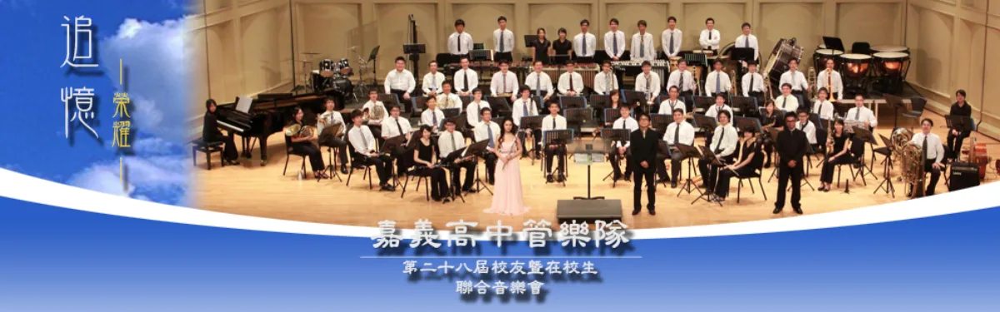
節目冊
節目冊與企劃書影像以縮圖列保存；可左右滑動瀏覽，點開圖片後可用左右鍵切換頁面。
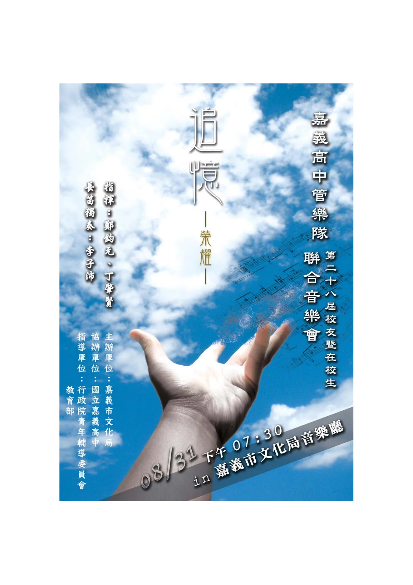
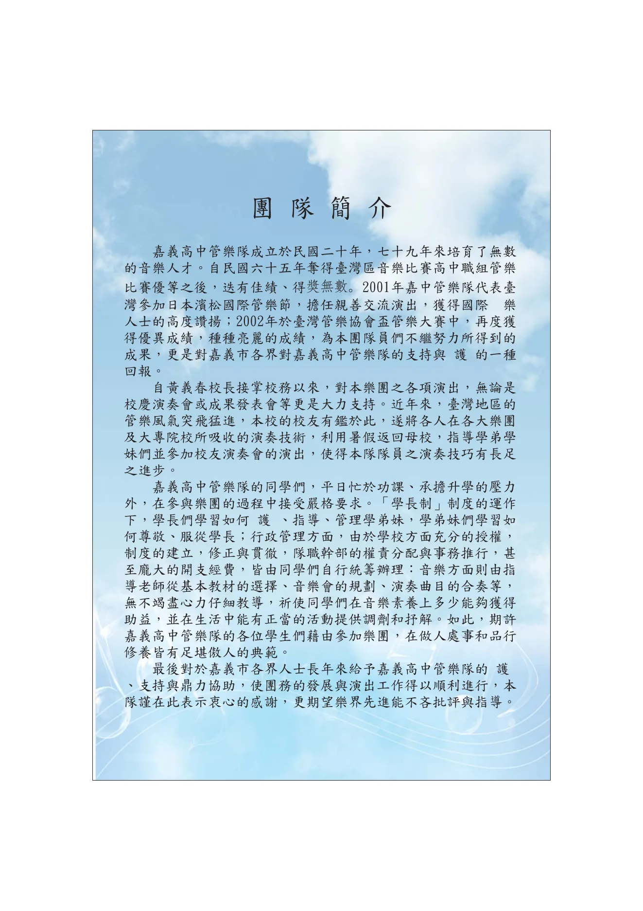
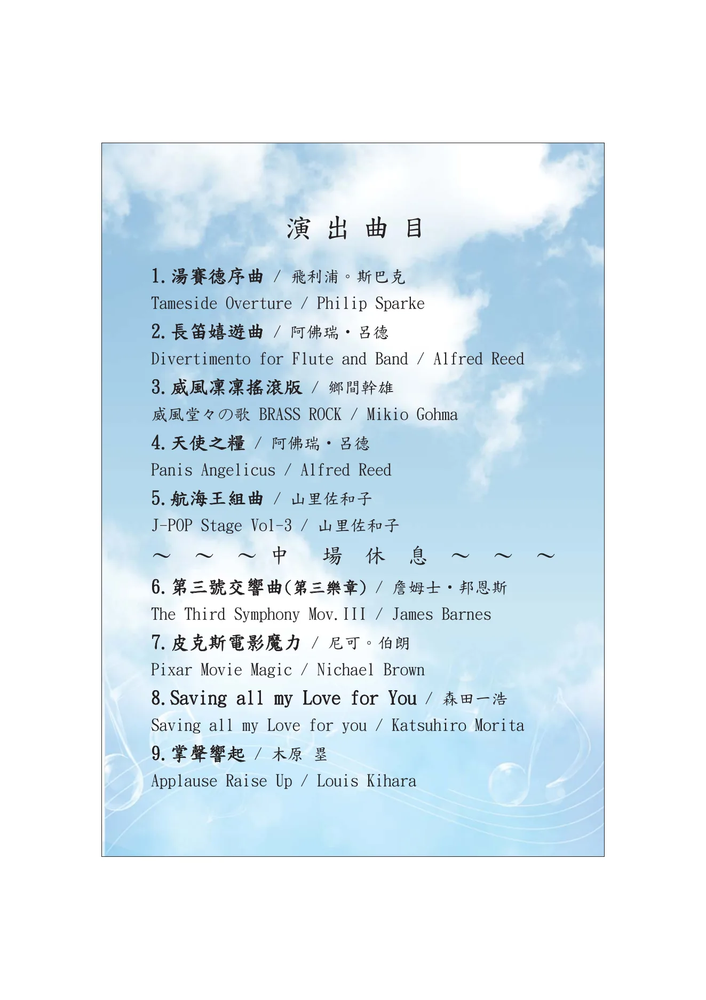
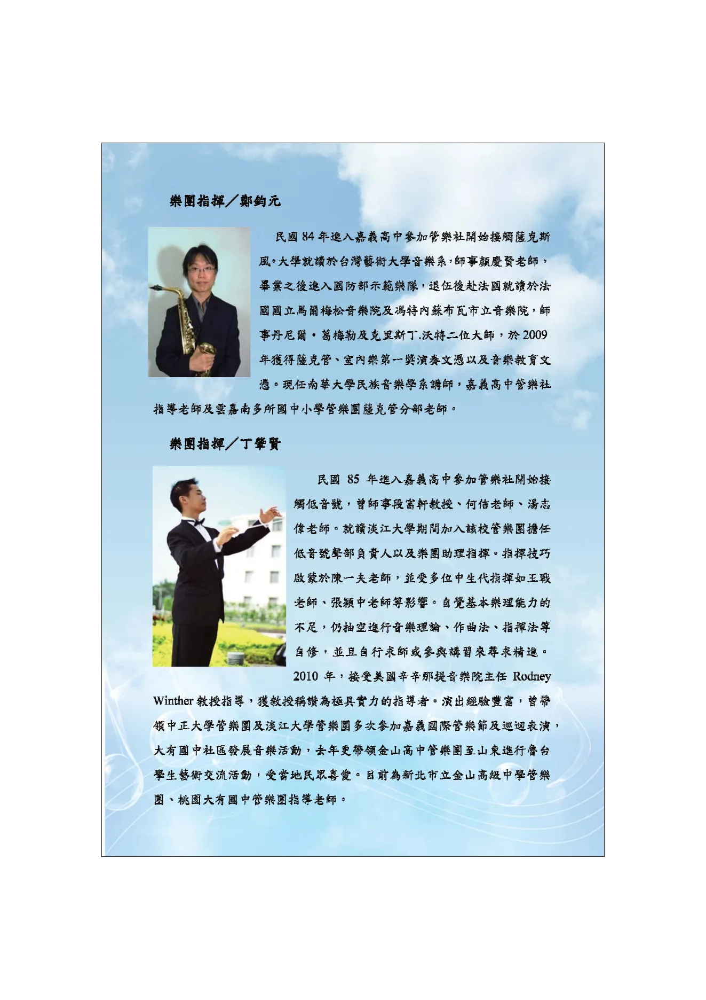
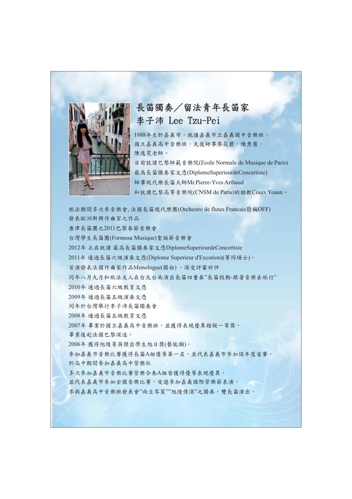
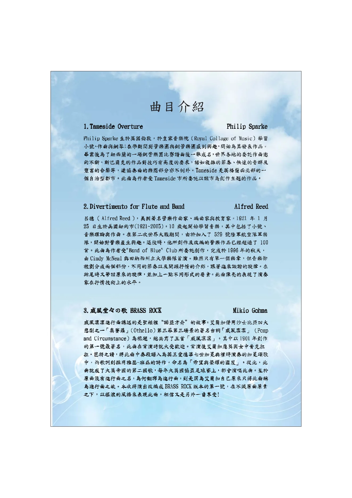
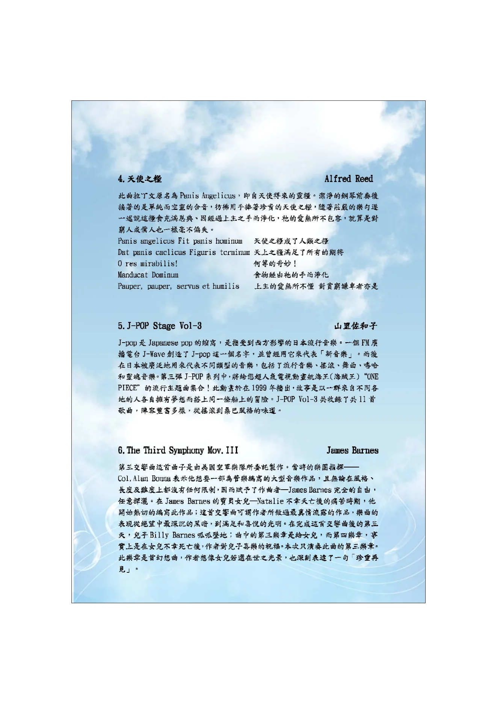
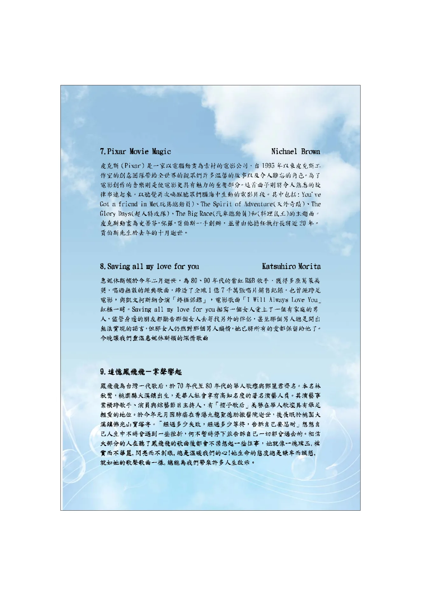
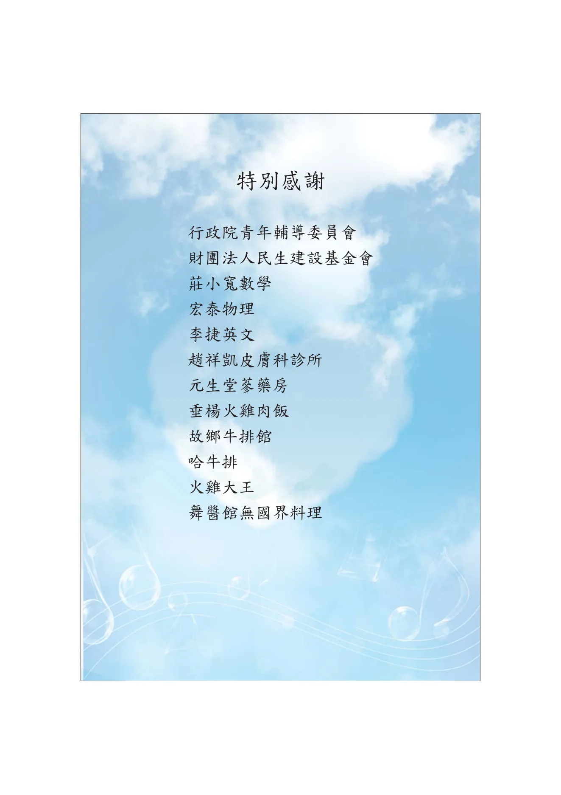
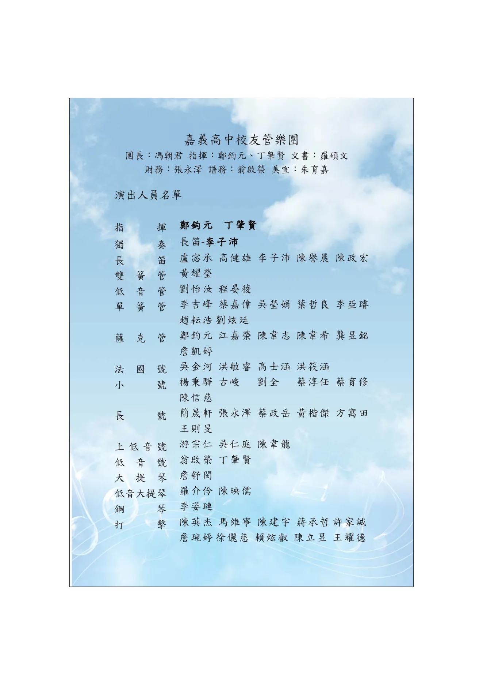
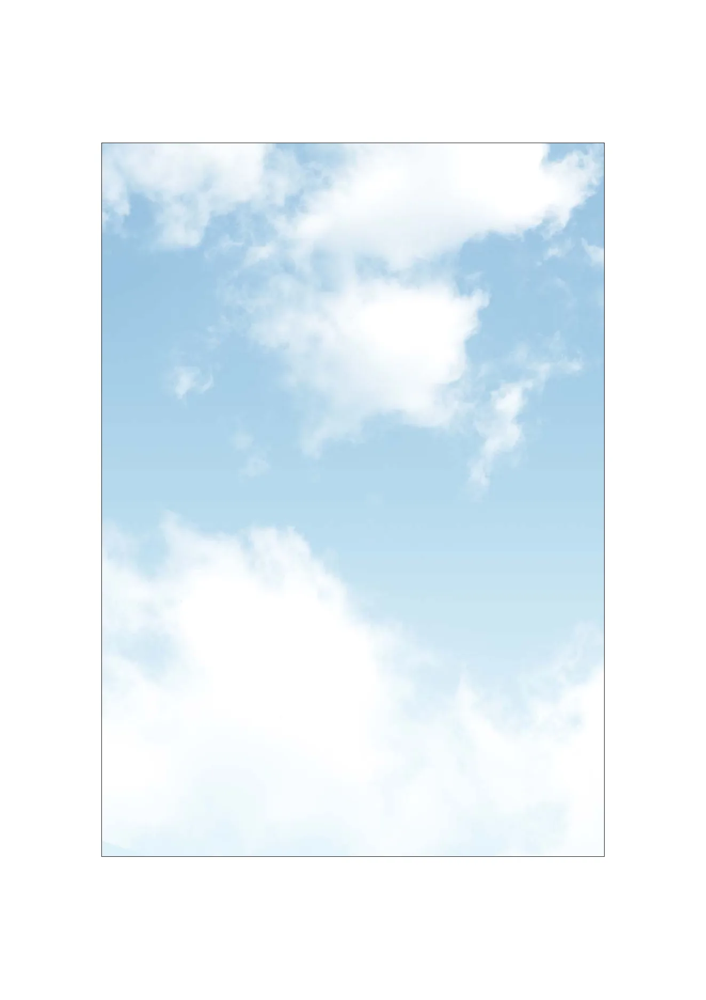
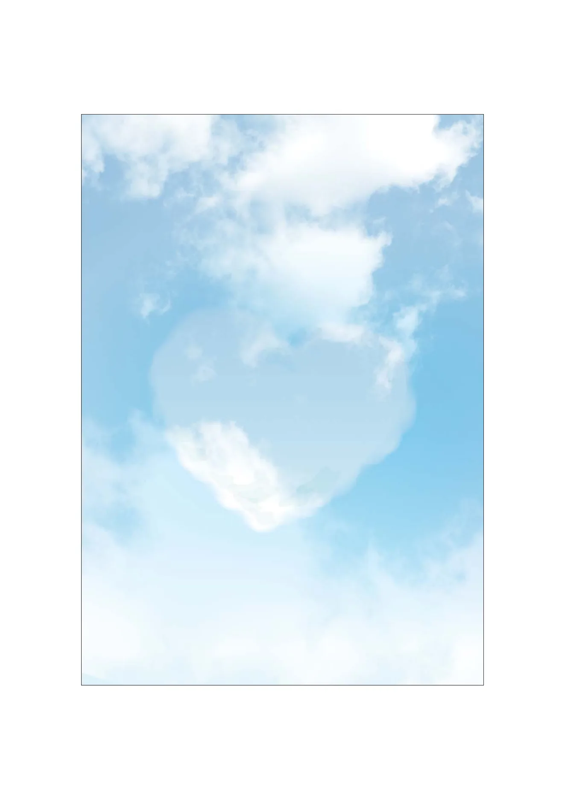
影片連結
相關文章
目前尚無已整理的相關文章。
資料補充
本頁正式日期、時間、場地、主辦／協辦／指導單位、曲目、指揮、獨奏、行政團隊、特別感謝與演出人員名單，主要依 2012 年正式節目冊整理；Word 檔作為團隊簡介、指揮簡介與名單校對來源；社群曲介僅作節目冊曲目介紹轉錄輔助。現有主視覺海報已保留，另補入 FB 封面宣傳圖與完整節目冊影像。
基本欄位已有可考資料，仍會持續核對節目冊與校友補充。